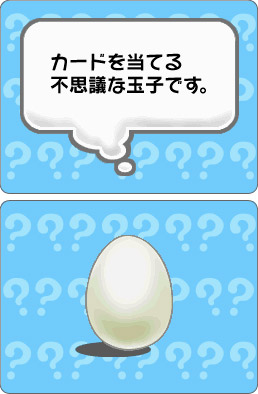

|
ここ数年、ちょっとしたマジック（手品）ブームといえますよね。デパートのおもちゃ売り場にあるマジックコーナーで店員の実演を夢中で見ている友人がいたら、ぜひ、このソフトをプレゼントしてあげてください。この冬、マジシャンデビューの夢がかなうはず！
『マジック大全』は、マジックを色々な形で楽しめるゲームです。小道具として使う専用のトランプがセットになっています。ＤＳが起こす不思議な体験を楽しめる「ひとりでマジック」モードや、ＤＳを手品の道具として使い、自分がマジシャンとなって観客にマジックを披露することができる「魅せるマジック」モードなど、マジックという独特な世界を気軽に味わえます。とくに「魅せるマジック」ではＤＳとトランプを使って数々のマジックを演じることができます。マジックのタネの解説から上手に見せるコツなどを教わるのは、なんだか先輩マジシャンに弟子入りした気分。披露するマジックのリハーサルを重ねるのも、なにやら楽しくなってくるんです。
年末年始はクリスマス、忘年会、新年会とパーティが連続する時期ですよね。これは華麗なマジックで盛り上げるチャンス。マジックは手順をおぼえるのはもちろんですが、なにより話術がポイントになります。ニンテンドーＤＳをアシスタント代わりに観客とのコミュニケーションが楽しめるのもこのゲームの醍醐味です。ぜひ、お試しあれ。 |
|  |
|
|
|
|